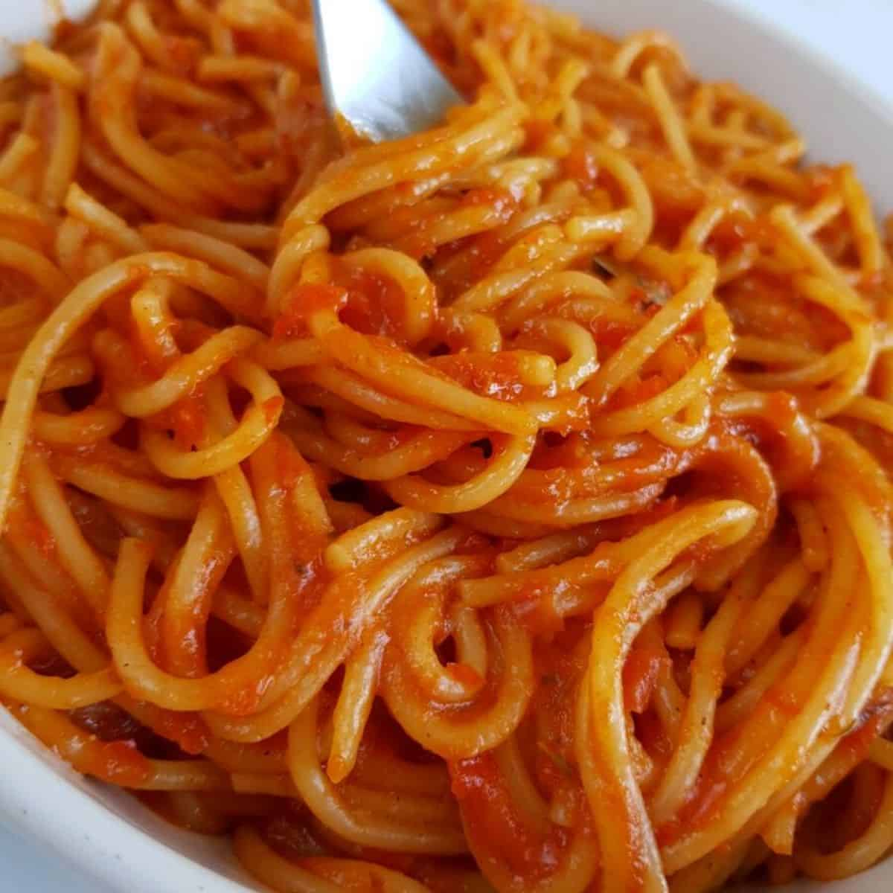

Spaghetti Recipe

Ingedients
- Spaghetti Noodles
- Tomato Sauce
Steps
- Put water in a pan to boil on the stove
- Once water is boiling, add spaghetti noodles and salt to taste
- While the noodles are cooking place the tomato sauce in a seperate pan over low heat
- Cook noodles approximately 8-12 minutes until al dente
- Serve the noodles on a plate and add as much sauce as you like